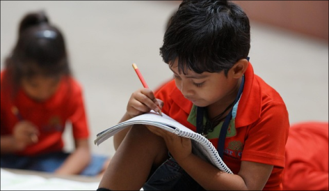

Devenir bénévole
L'autisme touche de nombreuses personnes et familles, souvent confrontées à un manque de soutien et de compréhension. En devenant bénévole dans notre association, vous pouvez apporter une aide précieuse et concrète à ceux qui en ont besoin.

Pourquoi le devenir ?
-
Aider et accopagner :
Offrez du temps et du soutien aux personnes autistes et à leurs familles. -
Sensibiliser :
Contribuez à changer les mentalités en favorisant l’inclusion et la compréhension de l’autisme. -
Apprendre et grandir :
Développez des compétences en communication, en pédagogie et en accompagnement. -
Faire partie d'une belle aventure huamine :
Rejoignez une équipe engagée, solidaire et bienveillante.
Comment nous aider ?
- - Organisation d’événements et d’ateliers adaptés.
- - Accompagnement et soutien aux familles.
- - Sensibilisation du public à l’autisme.
- - Aide administrative ou logistique selon vos compétences.
Aucune expérience requise, juste une envie d’aider !
Rejoignez-nous dès aujourd’hui et faites partie du changement ! Contactez-nous pour plus d’informations ou pour devenir bénévole !!
Contactez-nous !